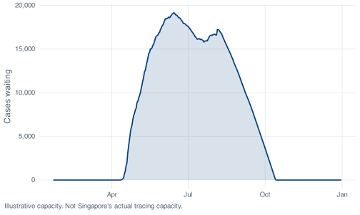

11 Loops, and when you need them
Loops sit outside the tidyverse verbs, and nothing in the previous chapters has needed one. This chapter covers them, because later in the course you will build compartmental models, and a compartmental model is a loop: the state of the epidemic tomorrow is computed from the state today, and no dplyr verb expresses that dependency.
The order here is loop first, then the vectorised expression that replaces it, then an account of what each of the two gives you.
11.1 Daily cases, written as a loop
confirmed in this dataset is cumulative. On 31 December it reads 58,599, which is every case Singapore recorded in 2020, not the number recorded that day. To get daily cases you take each value and subtract the one before it.
Written as a loop, that is:
Each part of that loop does something specific. daily <- numeric(nrow(covid)) creates the answer before filling it: a vector of 345 zeros, ready to be overwritten. for (i in seq_along(daily)) runs the body once for each position, with i taking the values 1, 2, 3 and so on. The if (i == 1) branch exists because there is no day before the first one, so covid$confirmed[0] would give you nothing at all rather than a zero. On day one the answer is confirmed[1], which in this dataset is 0, because Singapore’s first record on 22 January had a cumulative count of zero; that day genuinely had no new cases, and the zero is a true count rather than a missing value.
The first eight daily counts are 0, 1, 2, 0, 1, 1, 2, 0, covering 22 to 29 January.
11.2 The one-liner
Everything above is one mutate() call:
lag() shifts a vector down by one position, so lag(confirmed) on day i is confirmed on day i - 1. The whole subtraction happens at once, across all 345 rows, with no index variable anywhere. default = 0 is what replaces the if (i == 1) branch: it says what to use where there is no previous value, and 0 is right here for the reason given above. Leave the default out and day one becomes NA, which propagates into every count and every plot downstream.
The two results can be compared directly:
identical(daily, vectorised)
#> [1] TRUEidentical() is the strict comparison. It checks length, type and every element, and it returns a single TRUE or FALSE with no tolerance for rounding and no recycling. Use it when you want a yes-or-no answer about whether two objects are the same thing. (all.equal() is its forgiving cousin, which allows tiny floating-point differences and returns a message rather than FALSE when things differ, so it cannot be used directly as the condition of an if.)
Both also agree with the column covid_daily() built for you:
identical(daily, covid$daily_cases)
#> [1] TRUE11.3 What the loop costs and what it gives
The loop is eight lines and the mutate() is one. The loop has three places to get an index wrong: seq_along(daily), covid$confirmed[i] and covid$confirmed[i - 1]. Get the last one wrong by writing i + 1 and R will run it, return NA in the final position, and give no warning. The vectorised version has no indices at all, so it cannot have index bugs.
That is a substantial advantage, and it is a large part of why the tidyverse verbs exist. The loop offers two things in return.
The first is that every step is visible. lag() performs the shift internally; writing the shift out yourself is what shows you what the function is doing.
The second is that you can stop it and look around. Put browser() inside the body and R drops you into an interactive prompt at that iteration, with i and every other local variable available to inspect:
Type n to run the next line, c to continue, Q to quit. There is no equivalent for a mutate() that is wrong in the middle. When a vectorised calculation gives you a number you cannot explain, rewriting it as a loop and stepping through it is often the fastest way to find out why. The comment on the browser() line is the first in this book, and it shows when a comment earns its place: it records why the line is there, not what the line does, which the code already makes plain.
Reach for the vectorised version by default, and write the loop when the calculation is sequential or when you need to watch it happen.
11.4 Pre-allocate
daily <- numeric(nrow(covid)) allocates the answer vector before the loop starts. Compare that with the alternative, which is to grow the vector one element at a time:
grow <- function(n) {
x <- c()
for (i in 1:n) x <- c(x, i)
x
}
prealloc <- function(n) {
x <- numeric(n)
for (i in seq_len(n)) x[i] <- i
x
}
sizes <- c(10000, 20000, 40000)
tibble(
n = sizes,
grow_secs = map_dbl(sizes, function(n) system.time(grow(n))[["elapsed"]]),
prealloc_secs = map_dbl(sizes, function(n) system.time(prealloc(n))[["elapsed"]])
) %>%
mutate(grow_vs_previous_row = round(grow_secs / lag(grow_secs), 1))
#> # A tibble: 3 × 4
#> n grow_secs prealloc_secs grow_vs_previous_row
#> <dbl> <dbl> <dbl> <dbl>
#> 1 10000 0.0630 0.001000 NA
#> 2 20000 0.261 0 4.1
#> 3 40000 0.973 0.001000 3.7The last column uses lag() again, this time outside a mutate() on the COVID data. Each doubling of n multiplies the growing version’s time by roughly four. That is the signature of a quadratic cost, and here is where it comes from: x <- c(x, i) does not append, because R has no append operation. It allocates a brand new vector one element longer, copies the whole of x into it, adds the new value, and throws the old one away. Do that n times and you have copied roughly n²/2 values.
prealloc_secs barely moves, because x[i] <- value writes into memory that already exists. Those numbers are down at the resolution of the timer, which is why there is no ratio column for them.
The exact timings will differ from one machine to another. On a 345-day dataset the difference is immaterial; on a stochastic simulation with 100,000 iterations the gap is large enough to care about, and growing a vector inside a loop is a common cause of slow R code.
11.5 seq_along(), seq_len(), and the 1:0 trap
1:length(x) and 1:nrow(df) are the direct way to write a sequence of positions, and they fail in one case, which does occur in practice: : counts downwards when the second value is smaller than the first.
1:0
#> [1] 1 0The result is a vector of length two counting down, not an empty vector. So a loop written as 1:nrow(df) over a data frame with no rows runs twice, with i equal to 1 and then 0.
Here is a filter that finds nothing, because Singapore never recorded more than 1,426 cases in a day:
The next chunk loops over quiet using 1:nrow(quiet) and prints one line per row. quiet has zero rows. Commit to a number of lines before you scroll.
Two lines are printed, and neither is correct. The first is i = 1, and asking a zero-row tibble for its first row gives NA. The second is i = 0, and index zero in R returns a zero-length vector, which cat() prints as nothing at all, with no error raised. If that loop had been accumulating a total instead of printing, you would now have NA where the right answer was “there were no such days”.
seq_len() and seq_along() never count backwards. They return an empty sequence when there is nothing to iterate over, and a loop over an empty sequence does not run:
Use seq_along(x) when you are walking a vector or list, and seq_len(nrow(df)) when you are walking the rows of a data frame. It costs three extra characters and removes a whole category of bug.
11.6 while, when you do not know how many steps
for needs to know the number of iterations before it starts. When the stopping condition depends on what you find, use while.
Half of Singapore’s 2020 cases is 29,300 or thereabouts. The task is to find the day on which the cumulative count crossed that level.
Half the year’s cases had accumulated by 20 May, on day 120 of 345, with 225 days of the year still to run. That asymmetry comes from the dormitory outbreak, which concentrated most of the year’s cases into April to August.
Two properties of while need attention. First, something inside the body must change the condition, or the loop runs forever; here it is i <- i + 1, and omitting that line hangs the session (Escape, or the stop button in RStudio, gets you out). Second, the condition must eventually become false. If no day had crossed the target, i would keep climbing past 345 and covid$confirmed[346] would be NA, at which point R stops with a real error rather than looping forever:
Error in while (covid$confirmed[i] < target) { :
missing value where TRUE/FALSE neededThat message nearly always means a comparison produced NA, and NA is neither true nor false, so while and if refuse to guess.
11.7 map() and friends
purrr, part of the tidyverse, gives a shorter form for loops that build a result one element at a time. map(x, f) calls f on each element of x and returns a list of the results, always the same length as x.
month_summary() from Chapter 10 is needed again in this chapter. Chapters render in fresh sessions, so the definition has to be repeated here. When a function is used by several scripts, it is kept in one file that each script loads with source(), rather than copied from file to file. The definition is unchanged from Chapter 10:
month_summary <- function(covid_data, which_month) {
start <- floor_date(as.Date(which_month), "month")
if (!start %in% covid_data$month) {
stop("No data for ", format(start, "%B %Y"), ". The data covers ",
format(min(covid_data$month), "%B %Y"), " to ",
format(max(covid_data$month), "%B %Y"), ".", call. = FALSE)
}
covid_data %>%
filter(month == start) %>%
summarise(
month = start,
days = n(),
total = sum(daily_cases),
mean_daily = round(mean(daily_cases), 1),
peak = max(daily_cases),
peak_date = date[which.max(daily_cases)],
high_days = sum(severity == "High")
)
}
all_months <- unique(covid$month)
all_months
#> [1] "2020-01-01" "2020-02-01" "2020-03-01" "2020-04-01" "2020-05-01"
#> [6] "2020-06-01" "2020-07-01" "2020-08-01" "2020-09-01" "2020-10-01"
#> [11] "2020-11-01" "2020-12-01"Because month_summary() returns a one-row tibble, twelve calls can be stacked into a table:
monthly <- all_months %>%
map(function(m) month_summary(covid, m)) %>%
list_rbind()
monthly
#> # A tibble: 12 × 7
#> month days total mean_daily peak peak_date high_days
#> <date> <int> <dbl> <dbl> <dbl> <date> <int>
#> 1 2020-01-01 10 13 1.3 3 2020-01-30 0
#> 2 2020-02-01 29 89 3.1 9 2020-02-14 0
#> 3 2020-03-01 31 824 26.6 73 2020-03-25 0
#> 4 2020-04-01 30 15243 508. 1426 2020-04-20 18
#> 5 2020-05-01 31 18715 604. 932 2020-05-01 31
#> 6 2020-06-01 30 9023 301. 569 2020-06-03 12
#> 7 2020-07-01 31 8298 268. 513 2020-07-25 12
#> 8 2020-08-01 31 4607 149. 908 2020-08-05 4
#> 9 2020-09-01 30 953 31.8 86 2020-09-11 0
#> 10 2020-10-01 31 250 8.1 19 2020-10-01 0
#> 11 2020-11-01 30 203 6.8 18 2020-11-11 0
#> 12 2020-12-01 31 381 12.3 30 2020-12-31 0That is twelve calls producing twelve one-row tibbles, stacked into a table in three lines: map() did the iterating and list_rbind() did the stacking. Had month_summary() returned a list, list_rbind() would have refused, which is the argument made at the end of Chapter 10.
Check the arithmetic against something you already know:
The monthly totals add back to 58,599. May was the worst month by volume, with 18,715 cases and all 31 of its days classed High. April held the single worst day, 1,426 on the 20th.
map() always returns a list. When you know each result is a single number, map_dbl() returns a plain numeric vector instead, which is usually what you want:
map_dbl(all_months, function(m) month_summary(covid, m)$mean_daily)
#> [1] 1.3 3.1 26.6 508.1 603.7 300.8 267.7 148.6 31.8 8.1 6.8 12.3There is a whole family: map_chr() for strings, map_int() for integers, map_lgl() for TRUE/FALSE. They are stricter than map() on purpose. If one of your twelve results comes back as text when you asked for map_dbl(), you get an error instead of a silently mixed list.
walk() is for when you want the side effect and not the value: printing, saving files, writing plots to disk.
walk(all_months, function(m) {
s <- month_summary(covid, m)
cat(format(s$month, "%B"), "-", s$total, "cases,", s$high_days, "High days\n")
})
#> January - 13 cases, 0 High days
#> February - 89 cases, 0 High days
#> March - 824 cases, 0 High days
#> April - 15243 cases, 18 High days
#> May - 18715 cases, 31 High days
#> June - 9023 cases, 12 High days
#> July - 8298 cases, 12 High days
#> August - 4607 cases, 4 High days
#> September - 953 cases, 0 High days
#> October - 250 cases, 0 High days
#> November - 203 cases, 0 High days
#> December - 381 cases, 0 High dayswalk() returns its input invisibly, so nothing clutters the console except what you asked to print. Using map() here would also work, but it would print twelve tibbles into the output alongside the lines you asked for.
11.8 The loop you cannot vectorise
A tracing team can work through so many cases a day. On a day when more arrive, the surplus waits until tomorrow, and unused capacity on a quiet day is not carried forward:
\[ Q_t = \max\left(0,\ Q_{t-1} + C_t - k\right) \]
\(C_t\) is the cases reported on day \(t\), \(k\) is the daily capacity, and \(Q_t\) is what is still waiting. lag() does not help here, because lag() shifts a column that already exists and this is the column being created.
The queue looks like a running total of the daily excess, and R has a function for running totals:
The two results disagree: zero from the running-total shortcut against 19,172 from the loop. max(0, ...) has to be applied at every step, because \(Q_t\) depends on the clamped \(Q_{t-1}\): once the queue empties it has forgotten everything before it. cumsum() retains every term it has added, so the 82 days before Singapore first exceeded 300 cases bank a credit the later outbreak never works off, and pmax() on the outside flattens the result to zero.
queue %>%
ggplot(aes(date, backlog)) +
geom_area(fill = nus_colours[["blue"]], alpha = 0.15) +
geom_line(linewidth = 0.8) +
scale_x_date(date_labels = "%b") +
scale_y_continuous(labels = label_comma()) +
labs(x = NULL, y = "Cases waiting",
caption = "Illustrative capacity. Not Singapore's actual tracing capacity.")
Cases peaked on 20 April; the backlog peaks 55 days later on 14 June, because a queue grows for as long as arrivals exceed capacity rather than for as long as arrivals are rising. The same structure appears in the compartmental models later in the course: a state, a rule for getting from today’s state to tomorrow’s, and a loop to run it.
11.9 Exercises
Exercise 11.1 (Cumulative deaths, both ways) Do for deaths what this chapter did for confirmed: compute daily deaths with an explicit for loop, then again with lag(), then check the two against each other with identical().
The deaths column will not behave like the cases column, and finding out how is the exercise. Compare the sum of your daily deaths against the final cumulative figure of 29 and account for any difference before you move on.
deaths starts with a long run of missing values, and the first number that appears is not 1. Look at head(covid$deaths, 65) and ask what differencing can possibly recover from a series that begins part-way up.
Exercise 11.2 (How big does the team need to be?) Lift the backlog loop into a function of capacity that takes a vector of daily cases and returns the backlog vector, then run it for teams clearing 200, 300, 400, 600 and 800 cases a day. Build one table with the peak backlog, the date of that peak, the number of days the team spent behind, and whether the queue ever cleared again after peaking.
Then answer from your own output. Doubling the team from 300 a day to 600 a day does not halve the peak backlog. What does it do instead, and what is it about Singapore’s case series that makes it come out that way?
This is month_summary() and map() again: a function of one argument that returns a one-row tibble, then map() and list_rbind() to stack five of them. which.max() gives you the position of the peak, and for “did it clear” you want whether any value after that position is zero. Keep max(0, ...) inside the loop, for the reason given in the section above. If the last question will not come, compare sum(covid$daily_cases > 300) against sum(covid$daily_cases > 600).